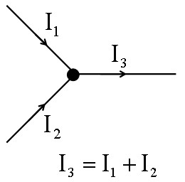

키르히호프의 법칙은 전류에 관한 제1 법칙과 전압에 관한 제2 법칙이 있다. 제1 법칙은 전류가 흐르는 길에서 들어오는 전류와 나가는 전류의 합이 같다는 것이고, 제2 법칙은 회로에 가해진 전원전압과 소비되는 전압강하의 합이 같다는 것이다.
외부에서 전하의 출입이 없는 닫힌 회로내에서 흐르는 전하의 양은 증가하거나 감소하지 않는데
이를 전하량 보존 법칙이라 한다.
다시 말하여 그림의 접합점 A나 B에 흘러 들어오는 전류의 합과
흘러 나가는 전류의 합은 같다.